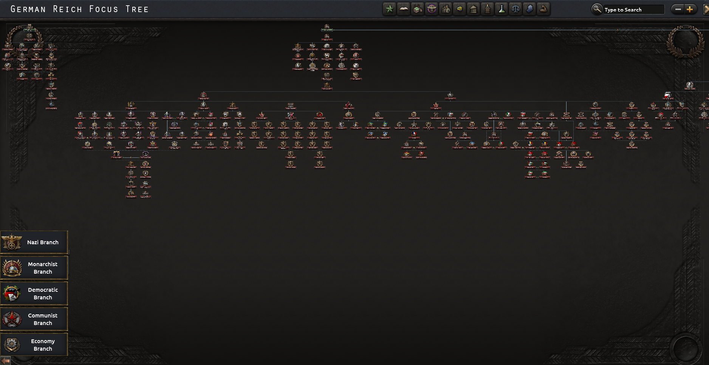
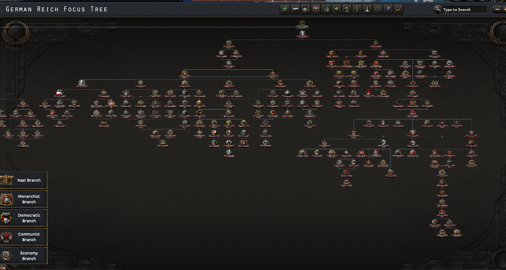
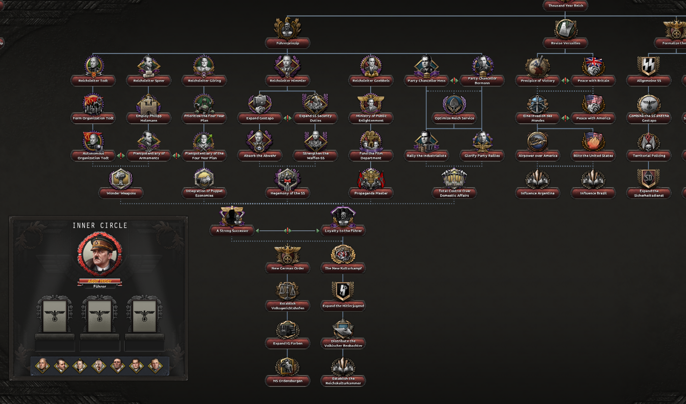

Hello again,
We did some stuff since Sunday 22nd and we want to give you a Christmas gift...
Today on Tuesday 24th of December we will release a patch including all stuff from this dev diary and the changes for Nationalist China WW2 from the last dev diary
German Focus Tree Revamp WW2
German WW2 focus tree had a very poor design/no design at all... It was just a bunch of mods and trees mixed together and called a day but not anymore!



Santa!
Yes Santa is in Rise of Nations!